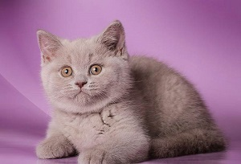
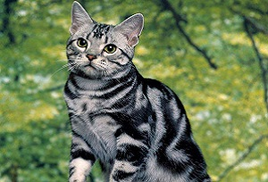

О породе
Британская голубая кошка имеет голову на плечах. В принципе, на этом можно было бы и остановиться, но стандарт подчеркивает, что голова должна быть правильной круглой формы, с широким черепом. Мордочка у британской короткошерстной кошки тоже по очертаниям близка к кругу. Особенности головы взрослого британца – непременное наличие наполненных щечек (так называемых брылей) и «улыбка чеширского кота». Вы же знаете о том, что только кошки британцы умеют улыбаться?
Как выглядит нос английской кошки? Он должен быть коротким, прямым и широким. Если смотреть на кота сбоку, то в том месте, где нос переходит в лоб животного находится небольшое углубление.Британская порода кошек уши не держит на макушке – они у неё поставлены низко и широко, при этом уши маленькие и округленные, снаружи хорошо опушены.А вот глаза, напротив, большие, круглые и открытые. Они посажены широко. Обычно цвет глаз золотой.Впрочем, стандартом породы оговаривается, что коты поинтового окраса смотрят на мир голубыми глазами.Британская шиншилла кошка может удивить не только голубыми глазами, но и ярко-зелеными и даже лавандовыми!
К слову, тусклый цвет глаз у британцев и ободок вокруг зрачка считаются недостатками.Так же к недостаткам головы специалисты относят: пинчеватость. Так говорят в том случае, когда подусники у британских кошек слишком сильно выделяются; «заэкзоченность» морды. Если короткий нос переходит в лоб через заметную горбинку – это тот случай. Вслед за деформацией носа меняются пропорции скул и глаз; мордочка, приближенная к домашней кошке. Выражается в плоском лбе, больших надбровных дугах и длинном носе; «лисья мордочка». Отсутствует наполненность морды, свойственная британцам, но в наличии суженная мочка носа. Часто сопровождается неправильным прикусом.
В своей родословной монаршие британские коты отличают короткошерстную и длинношерстную линии. Так как стандарт породы подходит под все остальные показатели, кроме длины шерсти, то на последнем надо остановиться подробнее.Длинношерстная британка — аристократка по духу. Миксы с другими породами для неё недопустимы! Только освященные браки с британскими короткошерстными представителями кошачьей знати претендуют на трон и признание породы. Шерсть у этой разновидности британцев средней длины, она прямая, с хорошим подшерстком и сухим остевым волосом. Длинношерстная кошка славится развитым воротником и штанишками. Опушение хвоста роскошное и длинное.Окрасы для длинношерстных британок допустимы любые, но окраска белая + колор-пойнт не разрешены.Короткошерстная ветвь британской породы радует хозяев изумительно нежной шерсткой, плотной и одинаковой по всему телу животного. Средняя длина шерстинки – 2,4 мм.
Однотонный окрас животного подразумевает равномерное прокрашивание всех шерстинок без исключения. Но может присутствовать некая затушеванность, дымкость и отливы, что стандартом породы не запрещается.Специалисты выделяют 30 видов окрасов британских кошек! Из одноцветных наиболее популярны британские котята у которых: черная окраска, белая, голубая (серая), кремовая, рыжая, лиловая (сочетание розового, сизого и серого окрасов).Из двухцветных самые распространенные сочетания это голубо-серебристый, мраморный, табби и тикированный окрас. Последний – это одна из разновидностей табби, которую еще иногда называют абиссинской расцветкой. Выглядит как веснушки – очень мило!На пике популярности в наши дни вышла окраска вискас (помните, те самые котики, что снимались в популярной рекламе?). На самом эта расцветка имеет официальное название «макрель» (mackerel). Тигровость вискасу обеспечивают обязательные три широкие полосы на спинке и тонкие полосы по телу животного. Причем основная окраска вискаса серебристая, а полосы всегда более темные.Так как «плюшевость» шерсти — это характерный признак породы, надо иметь в виду, что у некоторых окрасов наблюдается бедность шерстяного покрова. Наиболее часто этим грешит кошка, чья шоколадная шерстка (циннамон) радует любителей сладкого, но не ревностных поборников соответствия стандарту. Недостаточно плюшевости и у всевозможных табби окрасов. Как определить этот недостаток? Только тактильно-набивной подшерсток по ощущениям очень плотный и гладкий. Из-за такого густого подшерстка в тот момент, когда кошка линяет, квартира моментально «опушается».
 
Характер британской кошки
Их высочайшее величество славится британской манерностью.
Кот-британец – этим всё сказано. С одной стороны, отзывы владельцев единодушны в том, что кошки британцы такие няшки, коммуникабельные, ласковые и дружелюбные. Но по секрету своим знакомым те же владельцы делают другие отзывы и признаются, что эти кошки не терпят фамильярности и лучше всего, отдав им указание, мгновение помедлить и добавить с заискивающей улыбкой: «Рlease, sir».Да, плюшевый британский кот хорошо дружит с детьми и даже некоторыми собаками и людьми, но только с теми, которые его искренне любят и не надоедают своими привычками. С другими кот просто не общается. Ему, с высоты своего положения, так легко не замечать все попытки остальных войти к королю в доверие.Строки Марины Цветаевой: «Меня самой в себе так много, что места нету там другим» британцы, кажется, взяли за девиз. И если даже очень любящего и любимого хозяина долго не бывает дома, британские короткошерстные и длинношерстные коты не скучают, а довольствуются собственным обществом. Поэтому их еще называют «кошками для бизнесменов».
Здоровье
Истинный англичанин спит зимой при открытой форточке, совершает променады в дождливую погоду и закаляется на морозе. Истинные коты-англичане не отстают от земляков. Британская порода очень здоровая и в наследственных болезнях не замечена, за редким исключением.Некоторые болезни, свойственные, правда, всему кото-племени, часто встречаются и у них.Во-первых, кошки британцы подвержены гингивиту. Обычно пародонтоз начинается с воспаления одного зуба, которое будет прогрессировать, если на это воспаление не обратить внимания. Уже через время гингивит поразит 25% зубов, на третьей стадии – 30%. Потом наступает расширенный пародонтит, ткани десен отступают и болезнь переходит на корни зубов.Второе заболевание, которое угрожает британской кошке – это гипертрофическая кардиомиопатия, не поддающаяся, к сожалению, лечению. Эта болезнь взрослых животных, которую легче предупредить, чем лечить.
Рекомендуем с первого года жизни котенка дважды в год делать ему УЗИ сердца. Если к 8 годам болезнь не обнаруживается, то можно выдыхать и спать спокойно.Еще один бич британцев – это болезнь Кристмаса, иными словами, гемофилия В. Характеризуется повышенной кровоточивостью после полученных травм или перенесенной операции.Список заболеваний, которым подвержена порода британцев, замыкает грибок когтей. Внешне он выглядит как пятна на ногтях и их деформация. Периодически и системно осматривайте конечности питомца.И не забывайте про прививки!Благодаря прививкам можно свести на нет риск подхватить панлейкопению,кальцивироз,ринотрахеит, бешенство, хламидиоз.Традиционно котят прививают в период 2-3 месяца или в 8 месяцев, когда сменятся зубы.Сначала животному дают антигельминтный препарат. При обнаружении глистов через 10 дней проводят повторную дегельминтизацию и спустя еще 10 дней прививают. Если глисты в кале не обнаруживаются сразу, то через 10 дней делают прививки в обычном режиме. Не забывается после каждой прививки выдерживать карантин около 2-х недель.Прививка от бешенства делается отдельно сразу после смены зубов и повторяется ежегодно.